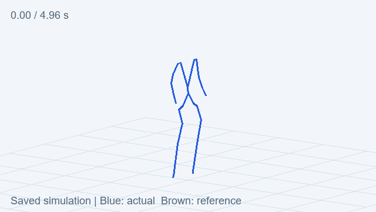
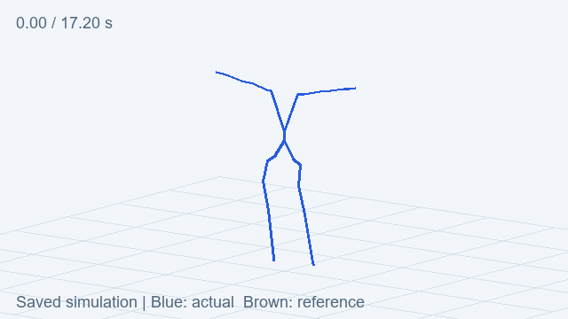

G1 控制器验证 · 汇总明细
已接入，尚未完成验证
在主机上接入 SONIC 控制器与 MuJoCo 仿真，以 G1 为对象进行小批动作跟踪。当前只有短动作的初步重复性结果，尚未证明清洗收益。
8 段三次均达到暂定标准
25 段参考候选进入测试流程
17.2 秒官方走路出现失稳
PHUMA
BONES-SEED
绿色：三次通过；黄色：部分通过；红色：适用但均未通过；灰色：初态不适用。
| 来源 | 候选 | 三次通过 | 部分通过 | 均未通过 | 不适用 |
|---|---|---|---|---|---|
| PHUMA | 6 | 5 | 0 | 0 | 1 |
| BONES-SEED | 19 | 3 | 2 | 11 | 3 |
通过与失稳的实际保存结果
PHUMA 短动作

来自本轮保存记录；蓝色为实际仿真，棕色为参考。
官方走路

参考约 40.02 秒，运行到 17.2 秒因姿态越过阈值而停止。
结果如何解释
- 每个候选尝试 3 次：1 次确定性基准，2 次施加 0.01 rad 的小幅关节扰动。
- 暂定标准：动作完成后再持续 1 秒；根部高度不低于 0.35 m，倾角不超过 60°，关节均方根误差小于 0.25 rad。
- 短动作从参考初态开始，不能据此证明从自然站立进入动作、长序列稳定性或真机表现。
- 静止站立校准通过；官方完整走路尚未通过。4 个初态不适用片段不计作当前协议的成功或失败。
下一步顺序
- 先校准控制器：排查约 17 秒的失稳，跑完官方走路，并复测 8 段固定动作。
- 再比较清洗收益：同一动作、同一控制器与条件，比较原始和清洗后的完成比例、跟踪误差与足滑。
- 把失败反馈给数据流程：区分数据、转换、控制器和场景因素，再按类别扩样。
第 4 阶段形成可重复对照之后，再推进第 5 阶段的掩码与补全研究。